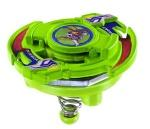

Jumping Base
| Jumping Base | |
|  | |
| Number: | 13 |
|---|---|
| System: | 4-Layer |
| Type: | Balance |
Contents
Takara/Hasbro Difference
Takara released Jumping Base with only the BB, but the Hasbro version contains a Tiger Defenser (Driger S) as well as an Eight Wide in order to make it into an entire Beyblade for release.
Blade Base (BB): Jumping Base
- Weight: 10 grams
Jumping Base is versatile in the sense that it comes with three changeable tips (Sharp, Flat, and Round). The reason why the BB is not used is due to the combination of its light weight, height, and spring that makes it an easy target to KO. If it recovers from a hit and is not KOed however, it can bounce around in an attempt to stabilize itself which wears down its RPM. Its height makes it an easy target to hit as well and offers a weak spot if the spring were to be hit. This BB should not be used for competitive play.
Use in Casual Play
Jumping Base is not be able to jump the entire time, it can bounce a few times which produces a jumping effect. This can be used for attack since it has multiple chances to perform Gattyaki due to its bounce in an attempt to KO or even knock the opponent?s Beyblade off balance on every bounce. This is not a reliable BB in this sense due to the few number of bounces it has on the start. With each bounce even, the amount of force decreases until it stays stable along the stadium surface. Again, it is not recommended for use of competitive play because of its unreliability along with same reasons previously mentioned above.
Compact customizations are ideal for Gattyaki. If you would like to try this out, here is an example:
Other Versions
- Jumping Base - Hasbro Version
Gallery
Overall
Jumping Base has an interesting gimmick, however, this gimmick has no serious use in competitive play. Its light weight from being part of the 4-Layer system, tall height, and springiness prevents it from any usage. This Beyblade should only be worth getting if you are a collector. However, if you are in need of a Tiger Defense and are unable find a Driger S, it would be a wise idea to purchase the Hasbro version of just to get the AR.